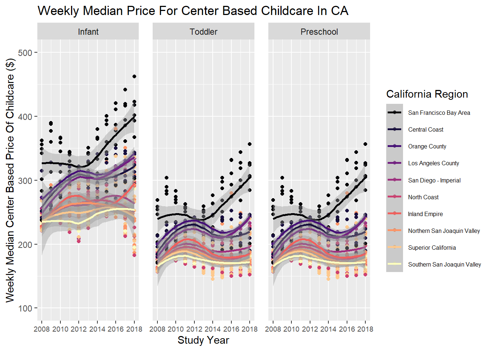

library(tidyverse) # Forcats functions and more
library(lubridate) # Timeseries functions
library(ggh4x) # Adjust facet panel sizingSTAT210_SP25 Lab 6 Childcare Costs in California
The Data
In this lab we’re going look at the median weekly cost of childcare in California. A detailed description of the data can be found here.
The data come to us from TidyTuesday.
0. Load the appropriate libraries and the data.
1options(readr.show_col_types = FALSE)
childcare_costs <- read_csv('https://raw.githubusercontent.com/rfordatascience/tidytuesday/master/data/2023/2023-05-09/childcare_costs.csv')
counties <- read_csv('https://raw.githubusercontent.com/rfordatascience/tidytuesday/master/data/2023/2023-05-09/counties.csv')
#spec(counties) # View col types
#spec(childcare_costs) # View col types- 1
- Source used to hide output warning: https://github.com/tidyverse/readr/issues/1250
1. Briefly describe the dataset (~ 4 sentences). What information does it contain?
Question 1 Response By River Mckegney:
The ‘childcare_costs’ dataset contains information about individuals such as unemployment rates at various ages, employment rates by gender and age, income, population size, ethnic background, family size, occupational field, and other demographic data as well as its associated location and date data. The ‘counties’ dataset contains state and county data information. Note this data contains location data from various states and not just California.
California Childcare Costs
Let’s start by focusing only on California.
2. Create a ca_childcare dataset of childcare costs in California, containing (1) county information and (2) just the year and childcare cost variable information from the childcare_costs dataset.
Hint: There are 58 counties in CA and 11 years in the dataset. Therefore, your new dataset should have 53 x 11 = 638 observations. The final data set should have study year, median household income expressed in 2018 dollars, all the variables associated with full-time median price charged for Center-based Care, and California county names
# Merged dataframe
location_childcare_merged <- counties %>%
inner_join(y = childcare_costs, by = "county_fips_code")
# Dataframe of selected variables
ca_childcare <- location_childcare_merged %>%
filter(state_name == "California") %>%
select(county_name, study_year, mhi_2018, mcsa, mfccsa, mc_infant, mc_toddler, mc_preschool, mfcc_infant, mfcc_toddler, mfcc_preschool) 3. Using a function from the forcats package, complete the code below to create a new variable where each county is categorized into one of the 10 Census regions in California. Use the Region description (from the plot), not the Region number. An example region has been started for you.
Hint: This is probably a good place to use ChatGPT to reduce on tedious work. But you do need to know how to prompt ChatGPT to make it useful!
ca_childcare <- ca_childcare |>
mutate(county_name = str_remove(county_name, " County")) |> # Remove the word 'county' from all variable names within the county_name column
2 mutate(region = fct_collapse(county_name,
'Superior California' = c("Butte", "Colusa", "El Dorado", "Glenn", "Lassen", "Modoc", "Nevada", "Placer", "Plumas", "Sacramento", "Shasta", "Sierra", "Siskiyou", "Sutter", "Tehama", "Yolo", "Yuba"),
'North Coast' = c("Del Norte", "Humboldt", "Lake", "Mendocino", "Napa", "Sonoma", "Trinity"),
'San Francisco Bay Area' = c("Alameda", "Contra Costa", "Marin", "San Francisco", "San Mateo", "Santa Clara", "Solano"),
'Northern San Joaquin Valley' = c("Alpine", "Amador", "Calaveras", "Madera", "Mariposa", "Merced", "Mono", "San Joaquin", "Stanislaus", "Tuolumne"),
'Central Coast' = c("Monterey", "San Benito", "San Luis Obispo", "Santa Barbara", "Santa Cruz", "Ventura"),
'Southern San Joaquin Valley' = c("Fresno", "Inyo", "Kern", "Kings", "Tulare"),
'Inland Empire' = c("Riverside", "San Bernardino"),
'Los Angeles County' = c("Los Angeles"),
'Orange County' = c("Orange"),
'San Diego - Imperial' = c("Imperial", "San Diego"))) # Create new col 'region' that sorts names into new groupings based on the 10 census region description names- 2
- Reference used to find forcats function required to carry out code script in its given format. https://forcats.tidyverse.org/reference/index.html
4. Let’s consider the median household income of each region, and how that income has changed over time. Create a table with ten rows, one for each region, and two columns, one for 2008 and one for 2018. The cells should contain the median of the median household income (expressed in 2018 dollars) of the region and the study_year. Arrange the rows by 2018 values.
# Hint: You will want to calculate the median of median income before you make columns for 2008/2018 by transforming the data
# River's code
ca_childcare |>
group_by(region, study_year) |>
summarize(med_income = median(mhi_2018)) |>
filter(study_year == 2018 | study_year == 2008) |>
arrange(desc(med_income))`summarise()` has grouped output by 'region'. You can override using the
`.groups` argument.# A tibble: 20 × 3
# Groups: region [10]
region study_year med_income
<fct> <dbl> <dbl>
1 San Francisco Bay Area 2018 104552
2 San Francisco Bay Area 2008 90412.
3 Orange County 2008 86452.
4 Orange County 2018 85398
5 Central Coast 2018 74849
6 Central Coast 2008 72979
7 Inland Empire 2008 65977.
8 Los Angeles County 2018 64251
9 Los Angeles County 2008 63471.
10 Inland Empire 2018 62056
11 San Diego - Imperial 2018 60344.
12 Northern San Joaquin Valley 2008 59108.
13 San Diego - Imperial 2008 58201.
14 Superior California 2008 57831.
15 Northern San Joaquin Valley 2018 57769
16 Superior California 2018 53270
17 Southern San Joaquin Valley 2008 52676.
18 Southern San Joaquin Valley 2018 52479
19 North Coast 2008 47862.
20 North Coast 2018 45528 5. Which California region had the lowest median full-time median weekly price for center-based childcare for infants in 2018? Does this region correspond to the region with the lowest median income in 2018 that you found in Q4?
Hint: The code should give me the EXACT answer. This means having the code output the exact row(s) and variable(s) necessary for providing the solution. Consider the slice() functions.
ca_childcare |>
group_by(region, study_year) |>
summarize(med_price_CBC = median(mc_infant)) |>
filter(study_year == 2018) |>
arrange(med_price_CBC)`summarise()` has grouped output by 'region'. You can override using the
`.groups` argument.# A tibble: 10 × 3
# Groups: region [10]
region study_year med_price_CBC
<fct> <dbl> <dbl>
1 Superior California 2018 215.
2 North Coast 2018 226.
3 Northern San Joaquin Valley 2018 238.
4 San Diego - Imperial 2018 262.
5 Southern San Joaquin Valley 2018 287.
6 Inland Empire 2018 294.
7 Central Coast 2018 318.
8 Los Angeles County 2018 334.
9 Orange County 2018 341.
10 San Francisco Bay Area 2018 402.River’s response to Q5: > Superior California is the region that displays the lowest median full time median weekly price for center based childcare for infants during 2018. This does not quite match up with the region that showed the lowest median household income, from question 5 which was the North Coast. Though Superior California did followed closely behind, with a generally low median household income in 2018 of $53270.00 when compared to all other regions.
6. Recreate the plot (look at online instructions) that shows, for all ten regions, the change over time of the full-time median price for center-based childcare for infants, toddlers, and preschoolers. Recreate the plot. You do not have to replicate the exact colors or theme, but your plot should have the same content, including the order of the facets and legend, reader-friendly labels, axes breaks, and a smooth function.
# Rivers Finished Graph
ca_childcare |>
select(study_year, county_name, mc_infant, mc_toddler, mc_preschool, region) |> # Select cols used
pivot_longer(cols = starts_with("mc_"), # Merge three numerical cols into one, select cols by "mc_"
names_to = "childcare_youth_type", # Move three categorical vars into a col
values_to = "med_center_childcare_value") |> # Move all numerical values into another col
3 mutate(childcare_youth_type = fct_recode(childcare_youth_type,
4 "Infant" = "mc_infant",
"Toddler" = "mc_toddler",
"Preschool" = "mc_preschool")) |> # Change names of categorical col variables into simple description for graph
mutate(region = fct_reorder(region, med_center_childcare_value, .desc = TRUE)) |>
ggplot() +
geom_point(aes(x = study_year, y = med_center_childcare_value, color = region)) +
geom_smooth(aes(x = study_year, y = med_center_childcare_value, color = region)) +
6 facet_grid(~ factor(childcare_youth_type, c("Infant", "Toddler", "Preschool"))) +
# Facet numerical values by categorical col
labs(title = "Weekly Median Price For Center Based Childcare In CA",
x = "Study Year",
y = "Weekly Median Center Based Price Of Childcare ($)") +
theme(legend.position = "right", legend.text = element_text(size = 6),
panel.spacing = unit(.5, "cm"), axis.text.x.bottom = element_text(size = 7)) + # Adjust legend position text size & overall size, distance between facet panels, and timeline tick text size
guides(color = guide_legend(title = "California Region")) +
scale_y_continuous(limits = c(100, 500)) + # Set y-axis value range & tick marks
scale_x_continuous(breaks = c(2008, 2010, 2012, 2014, 2016, 2018)) + # Set x-axis year tick marks
scale_color_viridis_d(option = "magma")- 3
- Source used to reference forcat’s fct_recode function formatting: https://forcats.tidyverse.org/reference/fct_recode.html.
- 4
- Reference used as troubleshoot that reminded me the order to specify naming, as fct_recode(column, “new_name” = “old_name”). https://stackoverflow.com/questions/67197228/changing-variable-name-in-box-plot-using-fct-recode.
- 6
- Alternative method to custom set order of facet: https://forum.posit.co/t/re-ordering-facet-wrap/141999/2.
`geom_smooth()` using method = 'loess' and formula = 'y ~ x'
Data Sources:
Data Science Learning Community (2024). Tidy Tuesday: A weekly social data project. https://tidytues.day https://github.com/rfordatascience/tidytuesday/blob/main/data/2023/2023-05-09/readme.md.
United States Department of Labor. Women’s Bureau. National Database of Childcare Prices. https://www.dol.gov/agencies/wb/topics/featured-childcare.
References:
Github. Problem with options(readr.show_col_types = FALSE) #1250. https://github.com/tidyverse/readr/issues/1250.
Wickham H and Posit (2023). Forcats, “Function reference”. https://forcats.tidyverse.org/reference/index.html.
Wickham H and Posit (2023). Forcats, “Change factor levels by hand”. Source code: https://github.com/tidyverse/forcats/blob/HEAD/R/recode.R. website url: https://forcats.tidyverse.org/reference/fct_recode.html.
Stackoverflow. “changing variable name in box plot using fct_recode”. Last modified 2021-04-22. https://stackoverflow.com/questions/67197228/changing-variable-name-in-box-plot-using-fct-recode.
Forcats. Developed by Hadley Wickham, Rstudio. “Reorder factor levels by sorting along another variable”. Source code: https://github.com/tidyverse/forcats/blob/main/R/reorder.R. Webpage html url: https://mpn.metworx.com/packages/forcats/0.5.0/reference/fct_reorder.html.
Posit Community. “Re-ordering facet_wrap”. https://forum.posit.co/t/re-ordering-facet-wrap/141999/2.